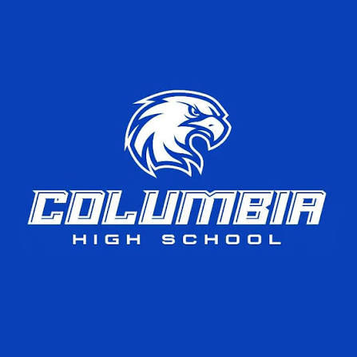

About
I am a St. Louis Native that has been coding since I was 12. I have always found ways to hone my technical abilities and show my love for problem solving through my personal projects and consistentaly coding every day. And this summer I was the sole IT intern at Weissman (a global leader in B2B dancewear).
I am currently pursuing a Bachelor of Science in Computer Science and a Minor in Mathematics at the University of Illinois Urbana-Champaign. I will graduate in May of 2028, finishing my degree in only 6 total semesters. I have a 3.96 PGA, have been named to the Dean's List every semester of attendance, and I am a recipient of the Scott Elizabeth Scholarship
In high school I scored a 1530 SAT, 35 SAT, and took 5 AP classes. I was the sole varsity captain of the Math Team, Track & Field, and Cross Country. I recieved competed at states in Math Team, Scholar Bowl, and Academic Challenge, as well as finishing 6th place in the state in the Computer Science competition of Academic Challenge.
Experience
IT Intern
Weissman
June 2026 - August 2026
Engineered Python-based web scraping to gather intelligence, structuring the data to uncover untapped target markets and directly drive customer acquisition. Assisted developement in predictive models in Python to project revenue and item-level demand. Designed custom automations to generate automated sprint reports and automated company notifications, eliminating manual overhead and optimizing team resource delegation. Streamlined project tracking pipelines by diagnosing and resolving Jira data-rendering bugs to eliminate user-input bottlenecks.
Education
University of Illinois Urbana-Champaign
Bachelor of Science in Computer Science with a Minor in Mathematics
GPA: 3.96
Elizabeth Scott Scholarship
Dean's List
August 2025 - Present
Relevant Coursework
CS 124 | Introduction to Computer Science I (Java)
CS 128 | Introduction to Computer Science II (C++)
CS 173 | Discrete Structures
CS 222 | Software Design Lab
CS 225 | Data Structures
CS 357 | Numerical Methods
MATH 241 | Calculus III
MATH 257 | Linear Algebra
MATH 285 | Differential Equations
MATH 461 | Probability Theory
Harvard University
June 2024 - July 2024
Accelerated Summer Course
CSCI P-14115 | Introduction to Python with a Focus on Visualization
Iowa Western Community College
GPA: 4.00
June 2026 - July 2026
5 Summer Course Credit Hours
PHY 220 | Classical Physics II (Electricity and Magnetism)
PHY 221 | Classical Physics II Lab

Saint Louis University
GPA: 4.00
August 2023 - May 2025
10 Dual Credit Hours taken through Columbia High School
Math 1510 | Calculus I
Spanish 1010 | Spanish for Beginners
Spanish 1020 | Beginning Spanish
Southwestern Illinois College
GPA: 4.00
August 2021 - May 2025
13 Dual Credit Hours taken through Columbia High School
MATH 107 | General Education Statistics
MGMT 117 | Personal Finance
CIS 174 | Web Fundamentals I (HTML)
OAT 130 | Word Processing Basics (Microsoft Word)
OAT 132 | Electronic Spreadsheet Basics (Microsoft Excel)
OAT 133 | Presentation Basics (Microsoft Powerpoint)

Columbia High School
GPA: 4.25
Summa Cum Laude
Graduation with Honors
August 2021 - May 2025
1530 SAT - 790 Math, 740 Reading
35 ACT - 35 Math, 35 Reading, 35 English, 34 Science
AP Calculus BC - 5 (Calculus I & Calculus II)
AP Computer Science A - 5 (JavaScript)
AP Literature and Composition - 4
AP Chemistry - 4
AP Language and Composition - 3